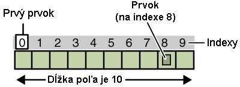
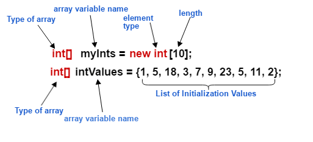

Lekcia 5: Polia
Polia sú špeciálne premenné, ktoré dokážu uchovať viacero hodnôt rovnakého typu naraz. Predstavte si to ako rad očíslovaných škatúľ, kde v každej je jedna hodnota.
Základné pravidlá polí:
- Pevná veľkosť: Keď pole vytvoríte, už nemôžete zmeniť počet jeho prvkov.
- Indexovanie: Prvky v poli sa číslujú od nuly. Prvý prvok má vždy index 0.
- Rovnaký typ: V jednom poli môžu byť len dáta rovnakého druhu (napr. len celé čísla).
Ako vytvoriť pole v Jave:
Tu je príklad, ako vytvoriť pole pre 5 celých čísel a priradiť mu hodnoty:
Prečo používať polia?
Polia sú kľúčové, keď pracujete s veľkým množstvom dát. Namiesto vytvárania desiatich samostatných premenných pre známky študentov vytvoríte jedno pole a spracujete ho pomocou cyklu for.
Visual vysvetlenie:

>